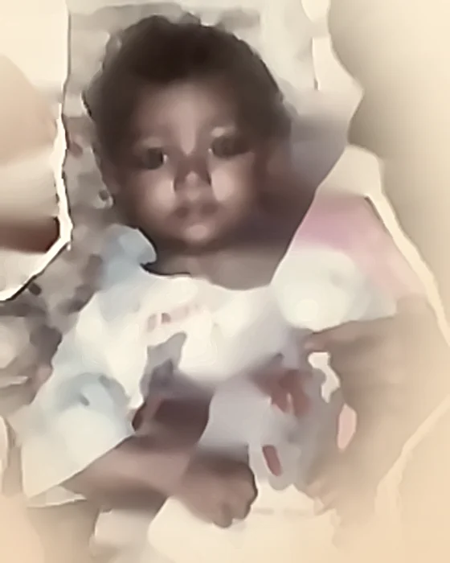
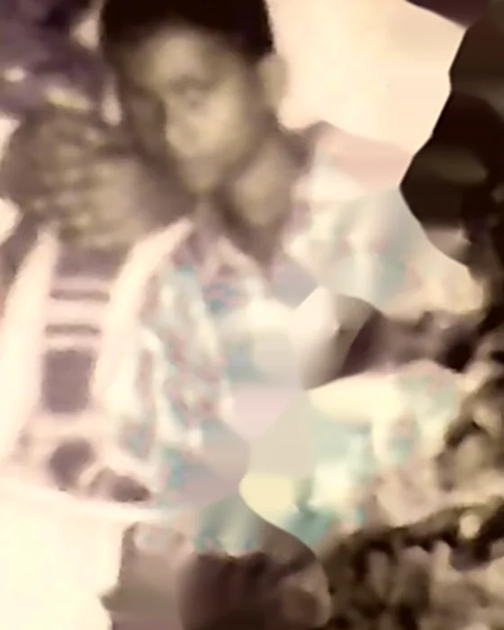
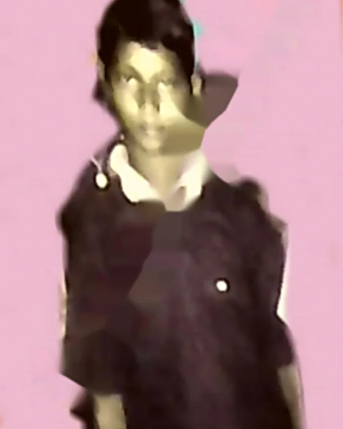
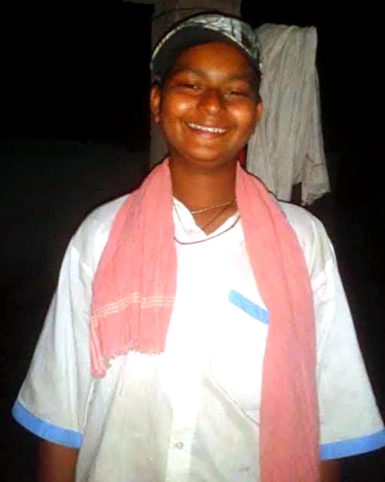

Everyone has a story that changes their life. This is dedicated to sharing my personal journey — childhood memories, struggles, achievements, and the lessons I learned throughout life.
Discipline, focus, and consistency didn't come naturally to me — they were built, slowly, through ordinary days that didn't feel like anything special at the time. There were setbacks that felt bigger than they were, and small wins that mattered more than I realized in the moment.
"Work in silence. Let success be your noise."
Each post in this journal reflects real experiences that shaped me into who I am today. I hope my stories inspire others to never give up and always believe in themselves — not because the path is easy, but because it's worth walking anyway.
My 27th Uncelebrated Birthday
Hi everyone — happy birthday to me! I think some of you will definitely relate to this post.
"Success is a journey, not a destination." — Arthur Ashe. To me, it also means being content in every situation.
The story began at about 4:00 am on 8/2/1998, when a newborn's cry (kilkari) echoed through a lower-class family — in the form of me.
I think many of us are under 30 and have still never cut halwa (semolina pudding) on our birthday with friends and relatives — yet we are still being ourselves, right in the front row of this community of celebrators. In those days, in that remote village without facilities, it was as usual for us as for any other family.
Then I received a human body, as well as divine parents. Why divine? Because I am here today to write what I have realised with my present age and knowledge.
I think there are two types of parents, especially fathers. One wants his child to achieve more than him, no matter how it is gained. The other teaches by holding the child's hand — first showing him how to be more open-hearted towards others than they themselves were. My family had all the virtues of the second kind. Of course, I was unaware of it at the time — until I lost his care and guidance.
Through this post I also want to congratulate everyone who still has their Kohinoor — their parents. No matter which category your parents fall in, they are always precious to us. Keep that in your conscience, always.
Thank you.
— From my 27th uncelebrated birthday…
From 2 to 28 — My Journey in Pictures
A few pictures from the way here — one for each chapter of the journey.



